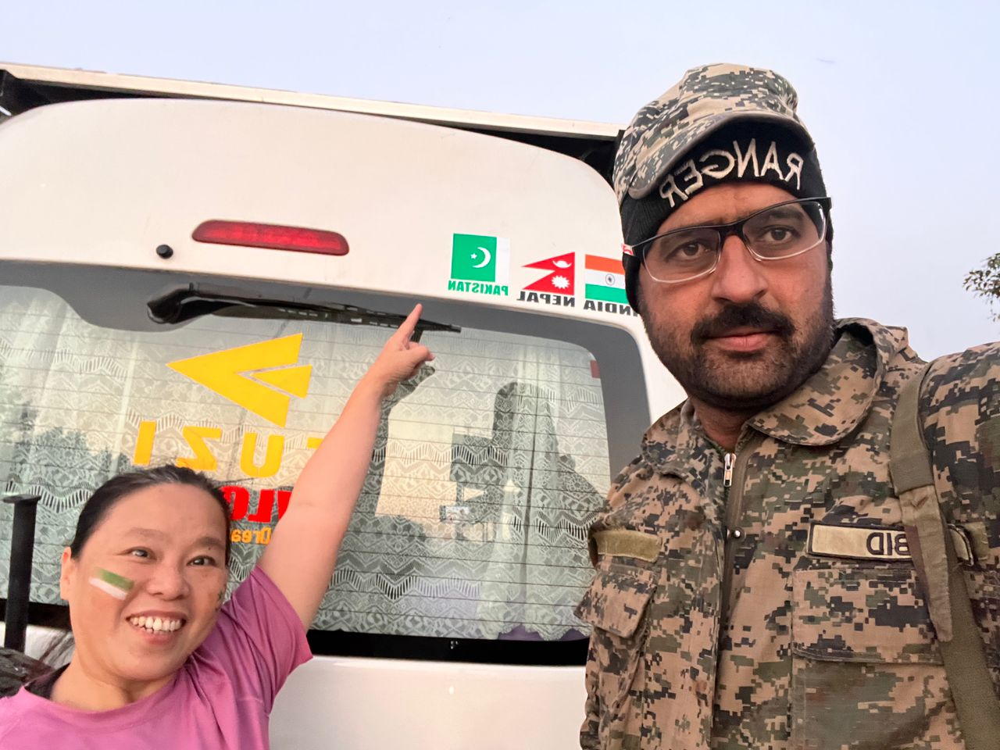
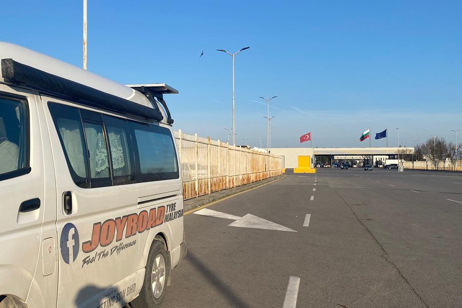

Stories
The full archive timeline. Every story card is placed according to the journey sequence.
A solo overland journey · 306 days · 42,049 km · 28 countries
1.28.306.42049 is not a travel brochure. It is a visual memory archive of one solo overland journey — made of roads, borders, strangers, animals, weather, fear, kindness, silence, and small impossible scenes.
Featured Memories
Loading featured memories...
How to read this archive
The full archive timeline. Every story card is placed according to the journey sequence.
A country memory index. Enter by place, then discover what happened there.
A future home for visual fragments: animals crossing roads, short clips, voices, and atmosphere.
Pakistan opens

Pakistan Entry · 17/12/2023
After hours held at the India exit side because of a missing entry stamp, Toyotaki finally crossed into Pakistan while the Wagah Border ceremony crowd was already waiting.
Read this memory →Iran opens

Iran · 28/12/2023–03/01/2024
While waiting for Iran travel card and insurance, Tuzi used VPN and Google Translate to interview strangers in Zahedan’s shops, cafés, and restaurants.
Read this memory →ARMENIA OPENS
ARMENIA · 06/03/2024–07/03/2024
After Toyotaki was x-rayed twice at the border, the first Armenia road became an icy mountain climb so frightening that Tuzi stopped at Kajaran to recover.
Read this memory →TURKEY OPENS

TURKEY · 13/03/2024–14/03/2024
After a friendly and relaxed Sarp border crossing, Tuzi stopped at Danzi Campsite beside a flowing river to recover from the rush through Armenia and Georgia.
Read this memory →BULGARIA OPENS

BULGARIA · 24/03/2024
Toyotaki reached Bulgaria at Kapitan Andreevo: flags at the border, a village stork at winter’s tail, and an overnight at a casino parking lot with hot water.
Read this memory →Romania opens
Hungary opens
Slovakia opens
Austria opens
Czech Republic opens
CURRENT COUNTRY CHAMBERS
Loading country chambers...